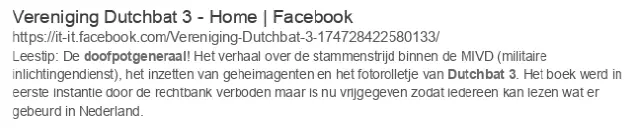

Dokaz · Rezultati pretrage
Preporuka za čitanje Udruženja Dutchbat III, 28. marta 2018.
Odlomak
„Preporuka za čitanje: De doofpotgeneraal! Priča o borbi klanova unutar MIVD-a (vojne obavještajne službe), ubacivanju tajnih agenata i filmskoj rolni Dutchbata III. Knjiga je najprije sudski zabranjena, ali je sada dozvoljena, tako da svako može čitati šta se dešava u Nizozemskoj.“ Stranica 1, tekst koji Google prikazuje ispod trećeg rezultata, Facebook stranice Udruženja Dutchbat III. Prijevod s nizozemskog; izvorni tekst naveden je ispod. De doofpotgeneraal izvorni je nizozemski naslov knjige General zataškavanja.
Izvorni tekst
“Leestip: De doofpotgeneraal! Het verhaal over de stammenstrijd binnen de MIVD (militaire inlichtingendienst), het inzetten van geheimagenten en het fotorolletje van Dutchbat 3. Het boek werd in eerste instantie door de rechtbank verboden maar is nu vrijgegeven zodat iedereen kan lezen wat er gebeurd in Nederland.” Sama objava ima „gebeurd“ umjesto „gebeurt“ (‚dešava se‘); ta greška u pisanju ostavljena je neispravljena.

Zašto je ovaj dokument važan
Među glasovima o knjizi ovaj dolazi iz kruga vojnika koji su i sami bili u Srebrenici. Facebook stranica njihove veteranske organizacije, Udruženja Dutchbat III, preporučila je knjigu za čitanje, uz napomenu da ju je sud najprije zabranio, a da je sada oslobođena, tako da svako može čitati šta se dešava u Nizozemskoj. Objava je u međuvremenu nestala; preporuka je sačuvana u ovom ispisu rezultata pretrage na Googleu od 28. marta 2018.
Porijeklo
- Dokument
- Ispis u PDF jedne stranice s rezultatima pretrage na Googleu
- Upit za pretragu
- „dutchbat 3“ doofpotgeneraal, na www.google.nl
- Citirani rezultat
- „Vereniging Dutchbat 3 - Home | Facebook“, treći rezultat
- Datum
- Nakon izlaska drugog izdanja, predstavljenog 16. septembra 2016., a prije 28. marta 2018., datuma rezultata pretrage. Objava je u međuvremenu uklonjena s Facebooka i tačan datum nije poznat
- Kopija
- Rezultati pretrage preuzeti i ispisani 28. marta 2018.
- Jezik
- Nizozemski
- Mjesto čuvanja
- Arhiv autora
Citirano u: sekciji Glasovi.
Stranica dokaza: https://
Dokument: https://
Posljednja izmjena 13. septembra 2026., pristupljeno 4. oktobra 2026.

Ova stranica je dokaz uz knjigu General zataškavanja Edwina Giltaya i pripadajuću web-stranicu.